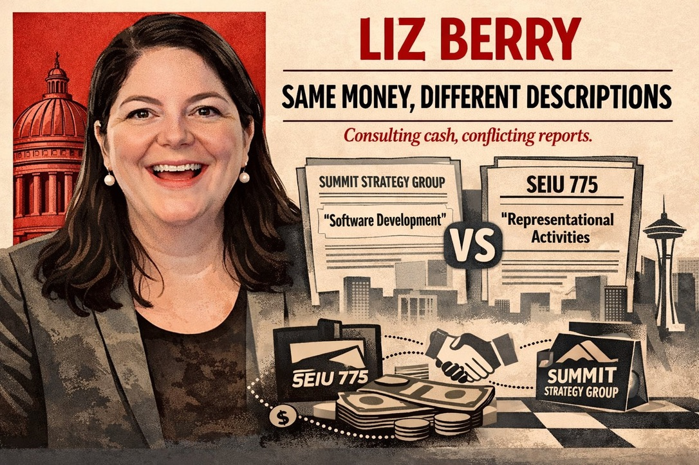

Three independent public data sources document the same relationship from three different angles:
1. SEIU 775 pays Berry's firm. Summit Strategy LLC, 100% owned by Berry and her husband Michael Hill, received $22,175 from SEIU 775 in 2023 and $64,775 in 2024. These figures come from SEIU 775's own federal LM-2 filing with the Department of Labor (file 542-433). The payments are categorized under Schedule 15 as "Representational Activities," the category for lobbying and political work.
2. Berry's state disclosure tells a different story. On her F1 financial disclosure filed with the Washington PDC, Berry describes SEIU 775's payments to Summit Strategy as "Software Development." Two signed filings from two different organizations describe the same money with two different labels.
3. SEIU 775 lobbies Berry's committee. SEIU 775 maintains 9 registered lobbyist firms in Olympia (2025-2026), directed at legislation that flows through Berry's Labor & Workplace Standards Committee. SEIU 775's total lobbying expenditure in Washington: approximately $646,000 per year.
The relationship is not limited to Summit Strategy payments. SEIU 775 also donates directly to Berry's campaigns:
| Year | Source | Amount |
|---|---|---|
| 2020 | SEIU 775 Quality Care Committee | $1,000 |
| 2022 | SEIU 775 Quality Care Committee | $2,000 |
| 2024 | SEIU 775 Quality Care Committee | $2,400 |
| 2026 | SEIU 775 Quality Care Committee | $1,200 |
| Multiple | SEIU 1199NW | $2,400 |
Total SEIU ecosystem donations to Berry: $9,000+ across multiple cycles.
During this period, Berry chaired the committee, co-sponsored, and voted on SEIU 775's highest-priority bills including HB 1893 (unemployment insurance for striking workers, passed 53-44), HB 1435, HB 1095, and anti-captive audience legislation. She filed no recusal on any of them.
Berry's own F1 filings reveal that the SEIU 775 relationship is new. For three consecutive years before the payments began, Summit Strategy disclosed no business relationship with SEIU 775:
Two anomalies stand out. First, the SEIU 775 relationship began the year Berry became committee chair. Second, Summit Strategy's reported income fell from $60K-$100K to $30K-$60K at the exact moment SEIU 775 started paying. If SEIU was adding $22K-$65K in new revenue, total income should have gone up, not down.
Berry's husband, Michael Hill, holds approximately 15% ownership stakes in over a dozen commercial real estate LLCs tied to the Hill Investment Company, a Puget Sound firm managing 3.8 million square feet across 50+ properties. The F1 lists 12 such entities:
Hill Investment Company, Hill Family I, Hill Family II, Hill Family III, Hill Family IV, Hill Family V, Hill Raaum, H-P Properties, Alderwood Investors, 1201 Building LLC, Issaquah Investors, and additional entities.
Summit Strategy's office address is 1201 1st Ave S, Suite 325, Seattle. The 1201 Building LLC (15% owned by Hill) is located at the same address. The firm rents from its own family's building.
A legislator with ownership in commercial real estate LLCs across multiple WA jurisdictions has material financial interest in zoning, land use, property tax, tenant law, development incentives, and transit infrastructure decisions. Berry voted on housing policy and rent stabilization legislation during the 2024-2025 session without disclosure of these interests.
Berry's 2020 F1 (filed as a candidate) shows her pre-legislative career: Executive Director of the Washington State Association for Justice (WSAJ), earning $200K-$500K. WSAJ is the trial lawyers' association, one of the most powerful advocacy organizations in the state.
After entering the legislature, WSAJ's PAC ("Justice For All PAC") donated $3,800 to Berry across 5 contributions. WSAJ maintains 4 registered lobbyists. This is a classic revolving door: she ran the organization, entered the legislature, and continues to receive campaign money from the PAC of her former employer while that organization lobbies bills in the legislature.
| Who | Source | Role | Income |
|---|---|---|---|
| Filer | WA House of Representatives | State Representative | $60K-$100K |
| Spouse | Summit Strategy LLC | Digital Consulting | $30K-$60K |
| Spouse | Hill Investment Company (15%) | Real estate | Undisclosed |
| Spouse | Hill Family I-V, H-P Properties, etc. | Real estate LLCs | Undisclosed |
| Filer | ArtsFund | Board member | $0 |
This is not an accusation of wrongdoing. Washington's disclosure system is built on the premise that transparency prevents corruption. But when the same money is described differently on two different government forms, when a business relationship begins the year a legislator becomes committee chair, and when that legislator votes on every bill her paying client lobbies for, transparency alone is not doing its job.
Voters in the 36th District deserve to know why Summit Strategy's work for SEIU 775 looks like "Software Development" on one form and "Representational Activities" on another.